| 对比维度 | Cortex-M85 | Cortex-R52 |
|---|---|---|
| 架构 | ARMv8.1-M Mainline | ARMv8-R |
| 设计目标 | 极致性能（标量、DSP、ML），端点AI | 实时性、功能安全、虚拟化 |
| 多核支持 | 支持双核锁步（DCLS，可选） | 原生最多4核，每核可配锁步，最多8逻辑核 |
| 安全特性 | TrustZone + PACBTI（防ROP/JOP攻击） | 虚拟化（Hypervisor）+ 两阶段MPU，面向ISO 26262 |
| SIMD/向量技术 | Helium（M向量扩展） 针对低功耗嵌入式优化，支持每通道预测、低开销循环 |
NEON（高级SIMD） 针对高性能多媒体设计，吞吐量更高，面积功耗更大 |
| 调试与追踪 | 内置调试：JTAG/SW + ETM + 断点/观察点 仅限单核，跟踪路径简单 |
CoreSight 完整系统： 支持多核交叉触发、复杂跟踪网络（Funnel/Replicator）、多种跟踪终点（ETB/ETF/ETR） |
| 内存系统 | TCM（I/D各最大16MB），缓存（I/D各最大64KB），MPU 16区域 | TCM（最多3个，各1MB），缓存（D-cache最大32KB），两阶段MPU 24区域 |
| 总线接口 | AXI-5（64位），两个Peripheral AHB | AXI-M（128位）、AXI-S、LLPP、Flash I/F |
| 特殊扩展 | Arm自定义指令、协处理器接口、DSP | FPU（单/双精度）、NEON |
| 可靠性 | ECC（TCM/缓存）、RAS | 全路径ECC（TCM/缓存/总线）、BIST、软件测试库、总线互连保护 |
| 典型应用 | 高端MCU、端点AI、智能传感器、物联网网关 | 汽车动力总成/底盘、安全岛、工业控制器 |
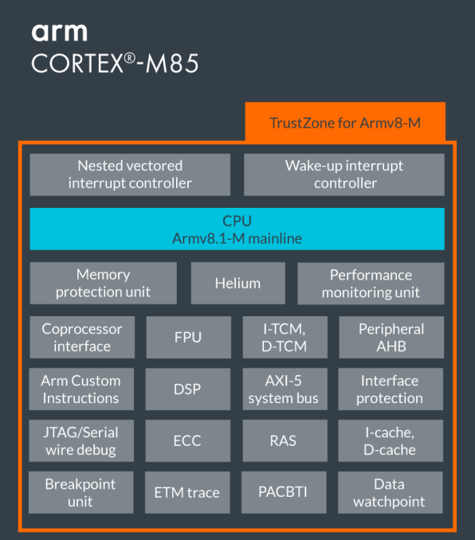
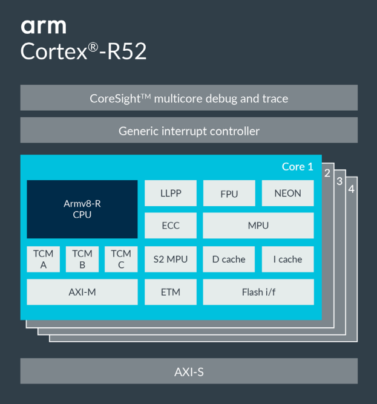
| 对比维度 | NEON | Helium (MVE) |
|---|---|---|
| 本质 | SIMD（单指令多数据流）技术 | SIMD（单指令多数据流）技术 |
| 所属架构 | ARMv7-A / ARMv8-A（Cortex-A系列） | ARMv8.1-M（Cortex-M系列） |
| 目标场景 | 高性能多媒体、应用处理器（手机、平板等） | 低功耗嵌入式、端点AI、物联网设备 |
| 寄存器宽度 | 128位 | 128位 |
| 支持数据类型 | 整数、单精度浮点（AArch64下支持双精度） | 整数、单精度浮点、半精度浮点 |
| 独特功能 | 融合乘加、双发射等复杂流水线优化 | 向量长度尾数处理、每通道预测、低开销循环 |
| 设计侧重 | 追求极致吞吐量，可牺牲面积和功耗 | 在面积和功耗受限下最大化SIMD效率 |
| 性能表现 | 极高（适合密集计算） | 比传统Cortex-M提升数倍，但低于NEON |
| 典型应用 | 视频编解码、3D图形、图像处理 | 语音识别、传感器融合、小型机器学习 |
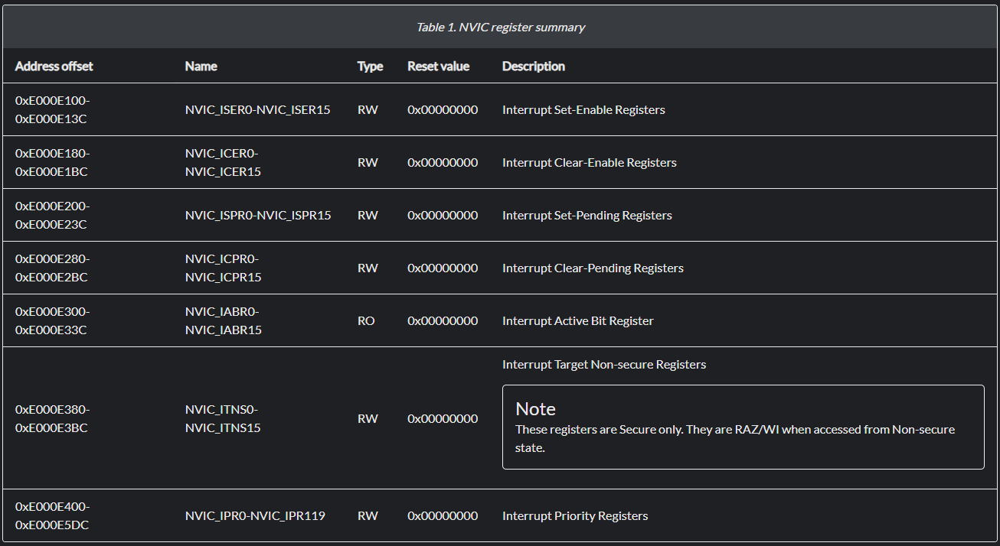
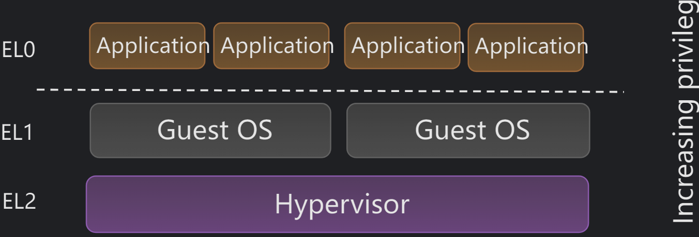
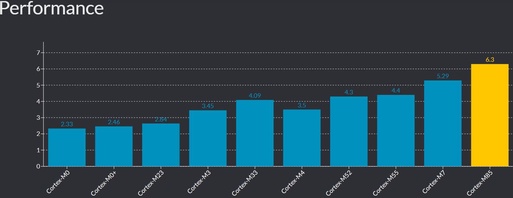
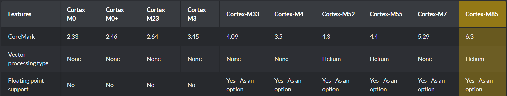
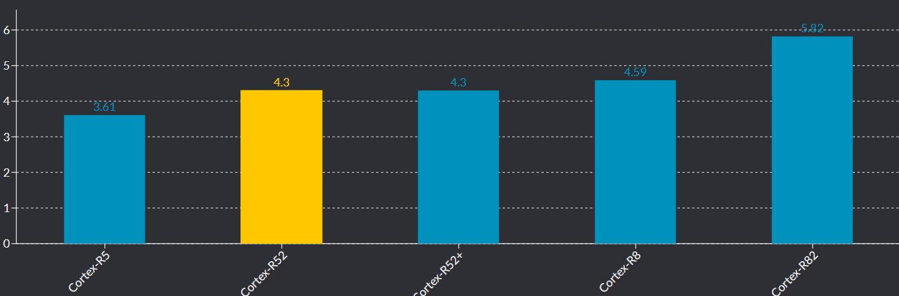
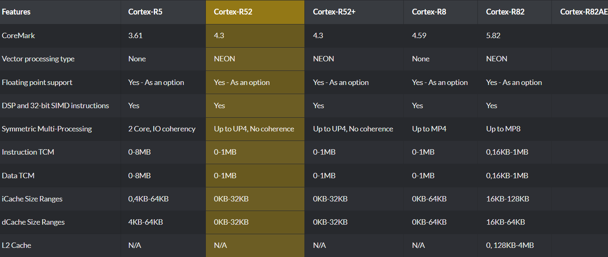
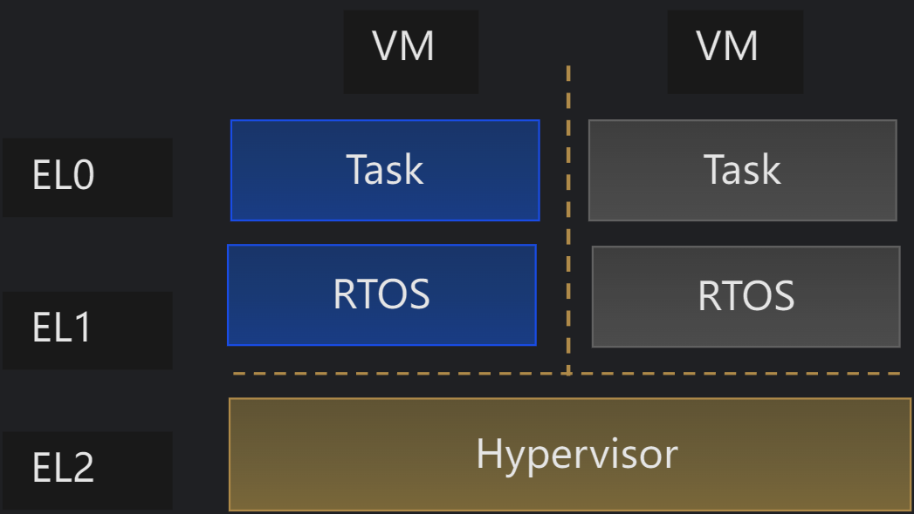
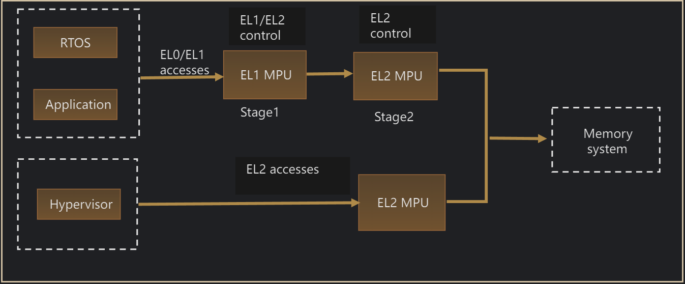
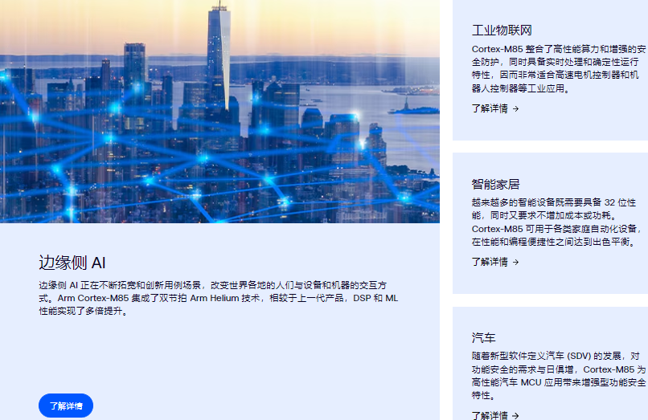